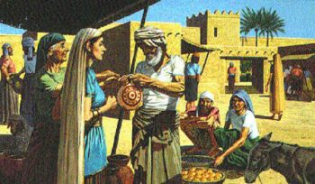

For thousands of years, God-fearing women have looked to the noble, or virtuous (KJV), woman of Proverbs 31 as their ideal. Mary, the mother of Jesus Christ, probably had this role model of the virtuous woman in the forefront of her mind from earliest childhood. Most Jewish women did, for this poem was traditionally recited in the Jewish home every week on the eve of the Sabbath.
But what about today's woman? Of what value can this ancient poem be to the diverse, complex life-styles of women today? To the married, to the single, to the young, to the old, to those working outside the home or inside the home, to those women with children or without children? It is more relevant than you might at first expect - although it is also too good to be true.
When we examine this ancient biblical ideal of womanhood, we do not find the stereotyped housewife occupied with dirty dishes and laundry, her daily life dictated by the demands of her husband and her children. Nor do we find a hardened, overly ambitious career woman who leaves her family to fend for itself.
What we find is a strong, dignified, multitalented, caring woman who is an individual in her own right. This woman has money to invest, servants to look after and real estate to manage. She is her husband's partner, and she is completely trusted with the responsibility for their lands, property and goods.
She has the business skills to buy and sell in the market, along with the heartfelt sensitivity and compassion to care for and fulfill the needs of people who are less fortunate. Cheerfully and energetically she tackles the challenges each day brings. Her husband and children love and respect her for her kind, generous and caring nature.
But with all her responsibilities, first and foremost, she looks to God. Her primary concern is God's will in her life. She is a woman after God's own heart. Let's examine the characteristics of this remarkable woman - a role model for Christian women today.
"A wife of noble character who can find? She is worth far more than rubies." The Hebrew word chayil, translated here "noble," or "virtuous" (KJV), means a wife of valor - a strong, capable woman with strong convictions. This description of the ideal wife does not agree with those who associate femininity with weakness and passivity.
"Her husband has full confidence in her and lacks nothing of value." Her husband trusts her management of their resources. Her industriousness adds to the family income.
"She brings him good, not harm, all the days of her life." This woman does not do right only when it is convenient and profitable. Her actions are not based on how she is treated by others or by what others think. Her character is steady. She is reliable and dependable.
"She selects wool and flax and works with eager hands." This woman enjoys working so much that she plans ahead for what she needs in order to accomplish her responsibilities.
"She is like the merchant ships, bringing her food from afar." The trait not to settle for the mediocre is portrayed by a woman who goes the extra mile for quality items.
"She gets up while it is still dark; she provides food for her family and portions for her servant girls." Though the woman described here has servants to take care of many of the household duties, she sets the pace. She understands that good managers have a responsibility to take care of those under their authority. That is one of her top priorities.
"She considers a field and buys it; out of her earnings she plants a vineyard." Every woman doesn't have to go into real estate and horticulture - the principle here is that this woman uses her mind. She does not act on a whim, but logically analyzes a situation before making a decision. Her goals are not only short term - she envisions the long-range benefits of her decisions.
"She sets about her work vigorously; her arms are strong for her tasks." We get a picture of a woman who vigorously goes about her duties. She keeps herself healthy and strong by proper health practices - good diet, adequate rest and exercise. Many people depend on her.
"She sees that her trading is profitable, and her lamp does not go out at night." She knows that her merchandise is good and takes pride in doing a good job. Night or day, no one worries that her responsibilities are not taken care of.
"In her hand she holds the distaff and grasps the spindle with her fingers." The example she sets is one of skill and industriousness. Whether this woman would be a computer programmer, a concert pianist, a mother, or all three, she develops her talents and hones her skills through education and diligent application.
"She opens her arms to the poor and extends her hands to the needy." Although it's good to donate to needy causes, this means far more than writing a check. This woman shows personal concern. She visits the sick, comforts the lonely and depressed, and delivers food to those in need.
"When it snows, she has no fear for her household; for all of them are clothed in scarlet." Providing clothing for the family is one of her responsibilities. She takes this seriously, and plans ahead. She does not practice crisis management.
"She makes coverings for her bed; she is clothed in fine linen and purple." This woman has high standards and dresses properly for the occasion.
"Her husband is respected at the city gate, where he takes his seat among the elders of the land." This man does not have to spend half his time trying to straighten out problems at home, and his success in the social world comes partly from her support, just as her success comes partly from his support. The original woman of Proverbs 31 couldn't phone her husband for his opinion on matters. She made many of the day-to-day decisions about their property and goods. He trusted her to manage the estate efficiently.
"She makes linen garments and sells them, and supplies the merchants with sashes." This woman runs a business from her home. Her efforts and industry add to the family income.
"Strength and honor are her clothing; she shall rejoice in time to come" (NKJV). Not only does this woman benefit each day from her wise and diligent actions, long-term lifetime benefits and rewards lie in store for her.
"She speaks with wisdom, and faithful instruction is on her tongue." This woman is well read and has the facts. She knows what she is talking about. Whether about her job, her personal values or her opinion on world events, she is able to express herself intelligently, tactfully and diplomatically. People come to her for good advice.
"She watches over the affairs of her household and does not eat the bread of idleness." She is an organized, energetic person who carries out her responsibilities.
"Her children arise and call her blessed; her husband also, and he praises her." This woman is not a doormat, slavishly trying to appease and please her family, no matter how unreasonable their demands. She is honored in her home. Here we gain an insight into the character of her husband as well. He teaches their children to respect her and the virtues she personifies.
"Many women do noble things, but you surpass them all." High praise for this extraordinary woman - a role model for women of all time.
"Charm is deceptive and beauty is fleeting; but a woman who fears the Lord is to be praised." Here is the key to this woman's effectiveness. Her priorities are determined by God's will, not her own. She is concerned about what God thinks, rather than with what other people think. Physical beauty and clever conversation are admirable qualities. But if a woman's beauty and charm are the extent of her virtues, what happens when time and the trials of life take their toll? This woman does not depend on beauty and charm for her success. She recognizes her need for God.
"Give her the reward she has earned, and let her works bring her praise at the city gate." This woman is actively doing, not merely talking. She does not boast about her plans for the future or her successes of the past. They are obvious.
Does this woman sound too good to be true? Perhaps she is. The woman described here is an idealized woman, a composite of many capable women. After all, not all people have the same skills. Some women's strengths are in music or art. Others may be in mathematics, teaching or business. Some are better managers and organizers than others. While some women may excel at coming up with ideas, others may be more skilled at creating or producing what has been invented by someone else. No one excels at everything.
Some women work for several years after high school or college before marrying. Others, for one reason or another, do not marry at all. Does this mean that unmarried women cannot be Proverbs 31 women? No. Although this chapter describes a married woman, marriage and motherhood are not prerequisites for the successful Christian female's life. The essential characteristics of the Proverbs 31 woman can be applied to the the single woman, too.
The model woman described in Proverbs is a portrait of ideal womanhood. The focus of this portrait is a woman's relationship with God, not her specific abilities or marital status. The Proverbs 31 woman realizes that regardless of her natural talents or acquired skills, or all her accomplishments, her strength comes from God.
Who is a virtuous woman today? Proverbs 31 tells you that it is the woman who puts God first. The ideal woman of Proverbs 31 should encourage all women everywhere. Cultures change, but this woman's God-inspired character still shines brightly across the centuries.
All scripture quotations, unless otherwise indicated, are taken from the Holy Bible, New International Version (NIV) J. Ursal, HPOI 2018 Apr 14 | posted 2025 Nov 16